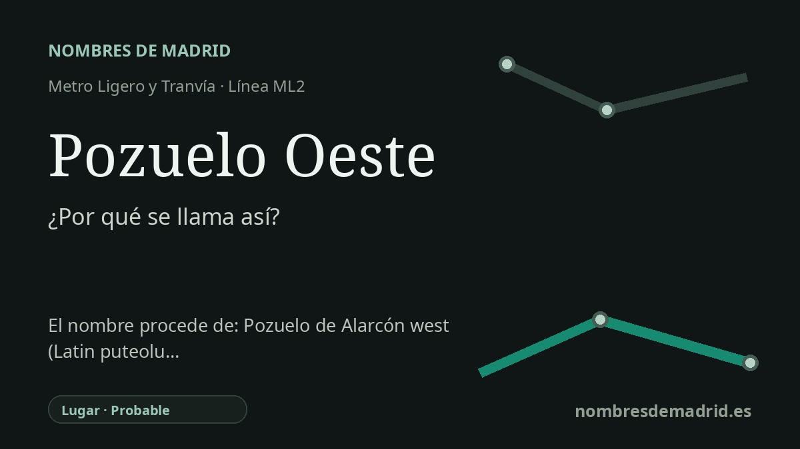

Publicado el · Investigación de Nombres de Madrid · Cómo verificamos cada origen · 8 fuentes consultadas
Respuesta rápida
Pozuelo Oeste es un nombre descriptivo de lugar: una parada de la ML2 en el sector occidental de Pozuelo de Alarcón. El nombre del municipio procede de Pozuelo, diminutivo castellano de pozo asociado a pozos y manantiales, más Alarcón por la familia que adquirió el señorío en 1632.
La historia del nombre
Pozuelo Oeste es un nombre moderno de lugar muy directo. Señala una parada de Metro Ligero Oeste de la línea ML2 en Pozuelo de Alarcón, situada junto a la carretera de Carabanchel, la M-502, frente al parque de bomberos y las instalaciones del 112. La palabra Oeste diferencia esta parada dentro del municipio y frente a otras referencias de transporte llamadas Pozuelo.
El origen más profundo está en Pozuelo de Alarcón. Toponomasticon Hispaniae explica Pozuelo como diminutivo castellano de pozo, con el sufijo antiguo -uelo. Esa interpretación encaja con la memoria histórica local: el Ayuntamiento y la documentación patrimonial regional relacionan el nombre con la presencia de pozos, manantiales y recursos de agua.
El lugar aparece en la geografía medieval del entorno de Madrid. El Ayuntamiento cita el año 1208, cuando Alfonso VIII estableció límites entre Segovia, Toledo, Madrid y Alamín, y el nombre figura en la fórmula 'et Pozolos remanet de parte de Madrid'. Después el asentamiento perteneció al alfoz de Madrid, dentro del sexmo de Aravaca, lo que explica la antigua denominación Pozuelo de Aravaca.
La segunda parte del nombre procede de una familia y de un señorío. En 1632 la jurisdicción de realengo pasó a manos señoriales vinculadas a la familia Ocaña y Alarcón, y el nombre municipal evolucionó de Pozuelo de Aravaca a Pozuelo de Alarcón. Las fuentes no lo expresan siempre igual: el Ayuntamiento y Toponomasticon nombran a Gabriel de Ocaña y Alarcón, mientras que una declaración patrimonial regional de 2024 dice que la venta fue a Luis de Ocaña y Alarcón, quien la convirtió en mayorazgo para su primogénito Gabriel.
La estación forma parte de la expansión del metro ligero de 2007 que conectó Madrid con Pozuelo y Aravaca. Las fuentes oficiales de transporte incluyen Pozuelo Oeste entre las 13 paradas de la ML2, y la Comunidad de Madrid describe esta parada dentro del tramo cercano a La Finca, zonas ajardinadas e instalaciones de emergencias. Por eso el nombre de la estación está bien sustentado como topónimo local y direccional, aunque no se localizó el acto administrativo concreto que aprobó el nombre de la parada.